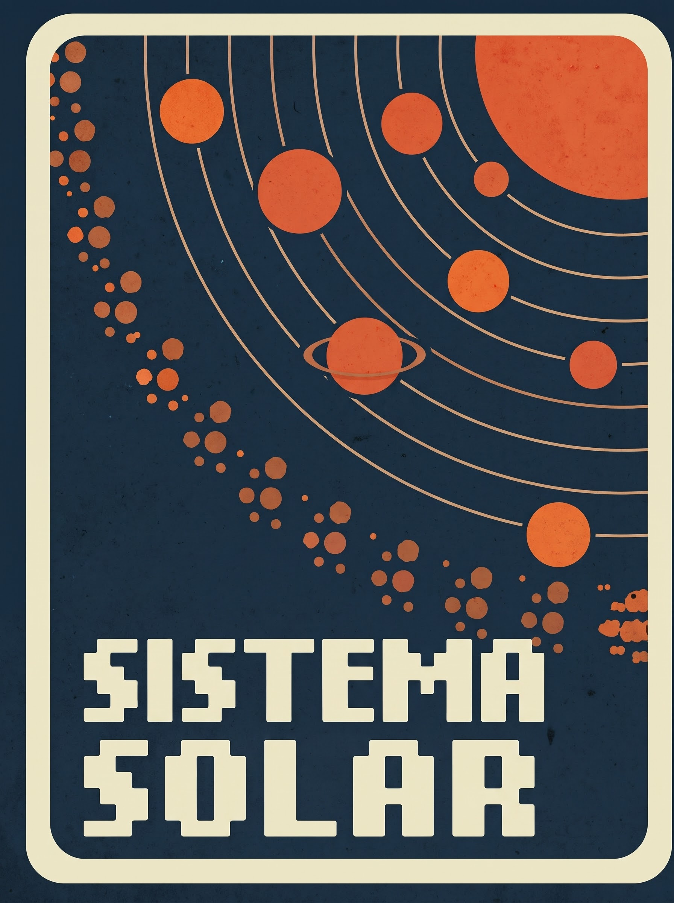

Semana do DS · Astronomia

em arte de caracteresUma viagem interativa pelo nosso sistema Solar construída inteiramente com letras,números e símbolos de texto. Explore planetas, luas e descubra o destino do nosso sistema Solar.
Vamos explorar
Plataforma e ignição
01 Telemetria & navegação espacial
Explore o Sistema Solar
em 3D ASCII
Visão geral
Arraste ou use as setas para orbitar · Role, faça pinça ou use +/− para ajustar a aproximaçãoEscala logarítmica ilustrativa
Catálogo dos astros
02 Evolução do nosso Sistema Solar · Passado, presente e futuro
O que será de nós?
I
Colapso
Há 4,6 bilhões de anos, uma nuvem gigante de gás e poeira entrou em colapso.
4.680.000.000
anos atrás